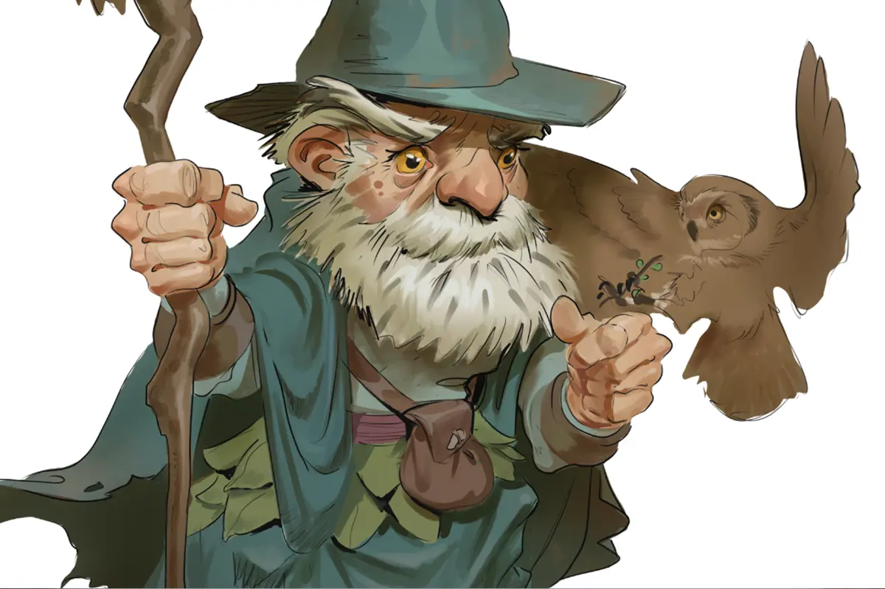
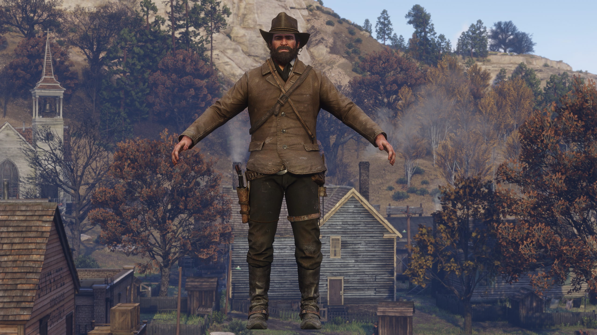

Brujo
Los brujos son buscadores del conocimiento que se encuentra escondido en el multiverso. A través de pactos hechos con seres poderosos de poder sobrenatural, los brujos desatan efectos mágicos tanto sutiles como espectaculares y recolectan secretos arcanos para potenciar su propio poder.

Momo
Momo es el nombre artístico de Gerónimo Benavides, un famoso streamer, yutubero e influencer argentino nacido en La Plata en 1989. Es uno de los creadores de contenido más conocidos de Hispanoamérica, abogado de profesión, muy hincha del club Platense y ganador del premio al Streamer del Año en los Coscu Army Awards.

Beta Arthur Morgan
B. Arthur Morgan es el nombre abreviado de la version beta del personaje Arthur Morgan, del videojuego Red Dead Redemption 2, con caracteristicas distintas y algo diferente a la version final del juego.